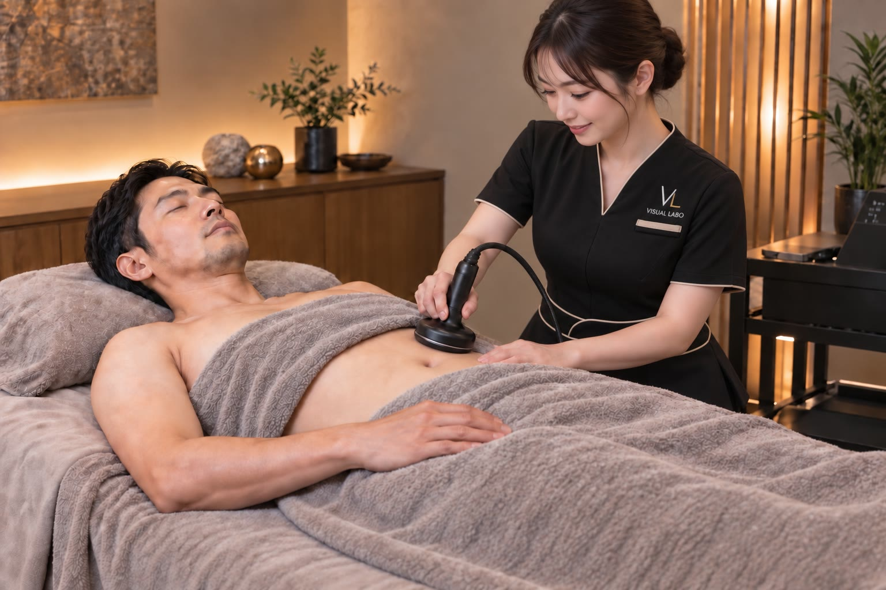

腹筋でも食事制限でもなく。温めて、動かす。
お腹まわりは内臓に近く、冷えやすい層といわれています。冷えて巡りが滞ると、まわりの組織が固まり、変化しにくい状態に。強く揉むより、まず温めてゆるめることが、お腹まわりのケアの第一歩です。
一般に、男性は内臓脂肪がつきやすいといわれています。VISUAL LABOの高周波は、表面だけでなく体の深部まで温められるのが特長です。冷えて固まりやすいお腹まわりを、奥からじんわりゆるめていきます。※感じ方・変化には個人差があります
お腹には、正面の腹直筋、脇の腹斜筋、そして最も内側で天然のコルセットといわれる腹横筋があります。腹横筋はお腹を引き込み、姿勢と下腹を支えますが、意識して使いにくいインナーマッスルです。
背景は、内臓脂肪／腸の動きの低下／姿勢（反り腰・骨盤の傾き）／腹横筋の弱り／冷え。下腹は、これらが重なってぽっこり見えやすい場所といわれます。
お腹まわりは内臓に近く、冷えやすい層といわれます。体は冷えるとエネルギーを使いにくく、ためこみやすい状態に。だから、まず深部から温めて代謝を保つことが、お腹のケアの土台になります。
腹筋運動は有効ですが、表面の腹直筋に偏りやすく、下腹の冷えやインナーマッスルには届きにくいことも。食事制限だけは戻りやすい。温めて＋EMSでインナーマッスルを動かすのが効率的です。
※ 一般的な体のしくみの解説です。医療行為ではなく、感じ方・変化には個人差があります。
お腹・下腹は、高周波で温めてから、EMSで動かす。
この順番だから、寝ながらでも効率よくアプローチできます。
高周波MystiCoreで、深い層までじんわり加温。冷えて固まりがちなお腹をゆるめ、巡りを促す土台をつくります。
温まってゆるんだ後に、EMS。自分では動かしにくい腹筋・インナーマッスルにはたらきかけ、引き締めと姿勢をサポートします。
※ 体型管理・コンディショニングを目的とした施術です。医療行為ではなく、感じ方・変化には個人差があります。
お腹まわりは、どのコースにも含まれます。60分ならお腹まわりに集中、90分・120分なら気になる部位も一緒に。
・体型管理を目的とした施術です。感じ方・変化には個人差があります。・ペースメーカー等の医療機器をご使用の方、施術部位に金属インプラントのある方などはご利用いただけません。詳しくは安全にご利用いただくためにをご確認ください。